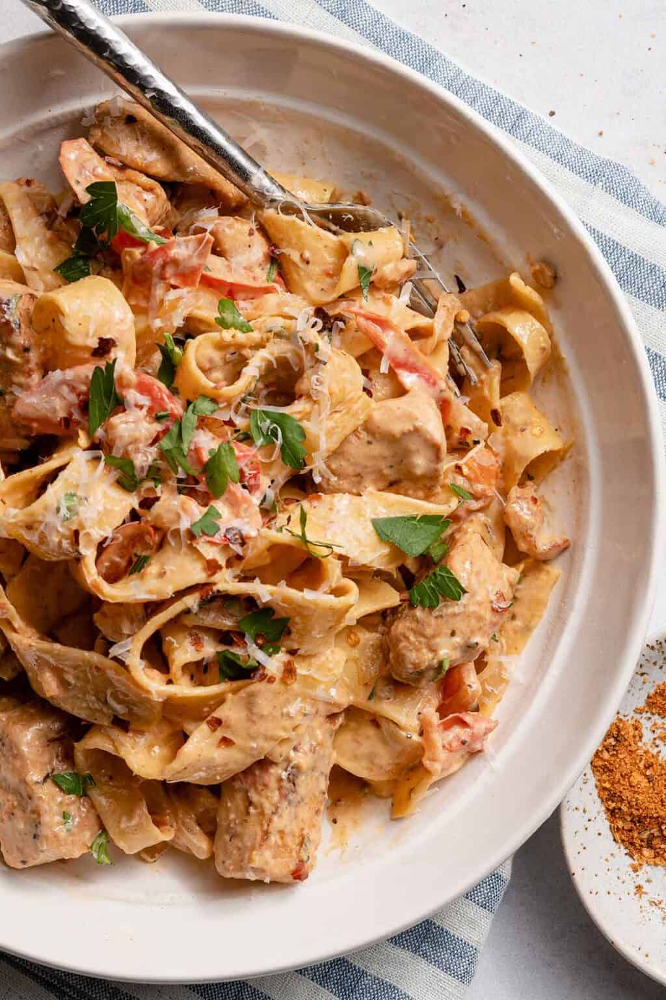

Creamy Cajun Chicken Pasta

Decription
A quick and easy recipe for two!
With a total prep and cook time of
of 30 minutes, there really is no excuse not to try this fantastic recipe.
A perfect mix of indulgent cream and spicy flavours.
Ingredients
- 4 ounces linguine pasta
- 2 boneless, skinless chicken breast halves, sliced into thin strips
- 2 teaspoons Cajun seasoning
- 2 tablespoons butter
- 1 green bell pepper, chopped
- ½ red bell pepper, chopped
- 4 fresh mushrooms, sliced
- 1 green onion, minced
- 1 ½ cups heavy cream
- ¼ teaspoon dried basil
- ¼ teaspoon lemon pepper
- ¼ teaspoon salt
- ⅛ teaspoon garlic powder
- ⅛ teaspoon ground black pepper
- 2 tablespoons grated Parmesan cheese
Steps
- Fill large pot with water (salted), bring to boil.
Add linguini pasta and cook until al dente (approx. 8-10 mins). Drain pasta.
- Place chicken in a bowl, coat with Cajun seasoning.
- Place large skillet over a medium heat. Add butter and chicken, saute until no longer
pink and juices run clear (approx. 5-7 mins). Add green and red peppers, onions and sliced mushrooms.
Cook for 2- 3 mins. Reduce heat.
- Stir in heavy cream, season with basil, lemon pepper, salt, garlic powder, ground black pepper. Heat through.
- In a large bowl, toss linguini with sauce. Sprinkle with grated Parmesan cheese and enjoy.